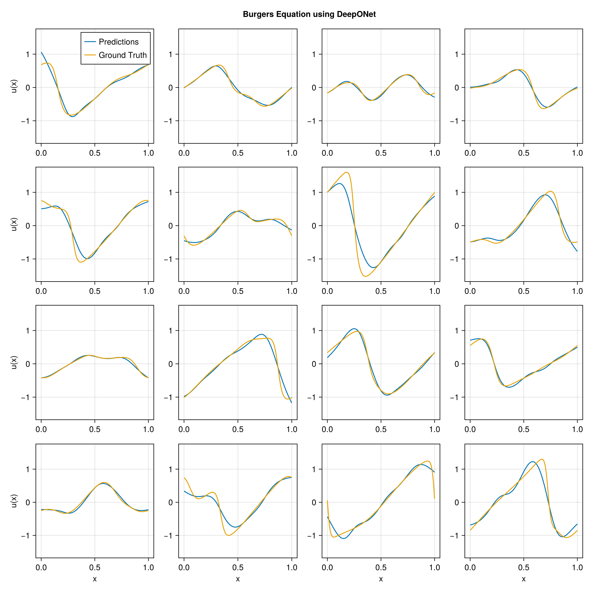

using DataDeps, MAT, MLUtils
using PythonCall, CondaPkg # For `gdown`
using Printf
const gdown = pyimport("gdown")
register(
DataDep(
"Burgers",
"""
Burgers' equation dataset from
[fourier_neural_operator](https://github.com/zongyi-li/fourier_neural_operator)
mapping between initial conditions to the solutions at the last point of time \
evolution in some function space.
u(x,0) -> u(x, time_end):
* `a`: initial conditions u(x,0)
* `u`: solutions u(x,t_end)
""",
"https://drive.google.com/uc?id=16a8od4vidbiNR3WtaBPCSZ0T3moxjhYe",
"9cbbe5070556c777b1ba3bacd49da5c36ea8ed138ba51b6ee76a24b971066ecd";
fetch_method=(url, local_dir) -> begin
pyconvert(String, gdown.download(url, joinpath(local_dir, "Burgers_R10.zip")))
end,
post_fetch_method=unpack
)
)
filepath = joinpath(datadep"Burgers", "burgers_data_R10.mat")
const N = 2048
const Δsamples = 2^3
const grid_size = div(2^13, Δsamples)
const T = Float32
file = matopen(filepath)
x_data = reshape(T.(collect(read(file, "a")[1:N, 1:Δsamples:end])), N, :, 1)
y_data = reshape(T.(collect(read(file, "u")[1:N, 1:Δsamples:end])), N, :, 1)
close(file)
x_data = permutedims(x_data, (2, 1, 3))
grid = reshape(T.(collect(range(0, 1; length=grid_size)')), :, grid_size, 1)
1×1024×1 Array{Float32, 3}:
[:, :, 1] =
0.0 0.000977517 0.00195503 … 0.997067 0.998045 0.999022 1.0
using Lux, NeuralOperators, Optimisers, Zygote, Random
using LuxCUDA
const cdev = cpu_device()
const gdev = gpu_device()
deeponet = DeepONet(;
branch=(size(x_data, 1), ntuple(Returns(32), 5)...),
trunk=(size(grid, 1), ntuple(Returns(32), 5)...),
branch_activation=tanh,
trunk_activation=tanh
)
ps, st = Lux.setup(Random.default_rng(), deeponet) |> gdev;
((branch = (layer_1 = (weight = Float32[0.0681871 0.043223217 … -0.08272851 0.043850776; -0.05239886 -0.016036268 … -0.008917743 -0.068375155; … ; 0.026895547 -0.03092211 … -0.029713962 -0.047586; -0.012628492 -0.017555442 … 0.01101563 0.06602108], bias = Float32[0.00477726, 0.0113122575, -0.02825759, 0.021113828, -0.0015189461, 0.0006991066, 0.02837751, -0.016448162, -0.018163405, -0.002822686 … -0.030146684, 0.009161413, 0.015170407, -0.020782478, 0.006147068, 0.0052806325, -0.026428241, 0.008860469, -0.025907032, 0.013580382]), layer_2 = (weight = Float32[-0.13688758 0.46970573 … -0.5102204 0.41762942; -0.42877933 -0.35665947 … 0.21784134 -0.024220586; … ; -0.43823066 0.4922381 … -0.10158741 -0.35987034; -0.07654003 0.29058042 … -0.33556235 -0.35274142], bias = Float32[-0.07779332, 0.1631951, 0.15082711, 0.14978646, -0.17335564, -0.0798609, 0.007841316, -0.14514157, 0.06474582, -0.036559716 … 0.07799028, 0.07966745, -0.053833622, 0.021365965, -0.0029558006, -0.16843419, 0.08420013, 0.029726025, 0.049507312, -0.11227737]), layer_3 = (weight = Float32[-0.40123582 -0.08153673 … -0.13443775 0.13243504; 0.22915721 0.096581034 … 0.4606974 0.21591364; … ; 0.5063661 -0.236024 … -0.32381883 0.41789266; 0.21422496 0.19048454 … -0.10501162 0.48347762], bias = Float32[0.012389109, 0.00017391898, 0.0703287, 0.13684165, -0.061107304, 0.13586868, -0.028607342, 0.030504372, 0.014926412, -0.07047787 … -0.038058203, 0.036563024, -0.054574333, 0.007062105, -0.07107518, -0.15104795, 0.054614246, 0.034709066, -0.011762427, -0.17050472]), layer_4 = (weight = Float32[0.040780563 0.0013806216 … 0.09327448 -0.13855249; -0.32611397 0.24391414 … -0.08919114 0.4867815; … ; -0.22515325 -0.1052614 … -0.26412693 -0.150705; -0.42519093 -0.28161243 … 0.35585257 0.016356183], bias = Float32[-0.1503967, 0.16359986, 0.15827583, -0.076959744, -0.11381476, 0.13184735, -0.17309292, -0.11792804, -0.043195292, -0.12514193 … 0.12793165, -0.17039554, 0.13113025, -0.16474986, 0.14605556, 0.10173666, 0.12739944, -0.17429258, 0.1172284, -0.1100265]), layer_5 = (weight = Float32[-0.13095856 0.25748774 … -0.1893357 -0.04496582; 0.23930767 0.18195492 … -0.049275473 0.25712097; … ; -0.20841727 0.18342051 … 0.2892246 0.20428003; -0.15253003 0.20865352 … 0.2270625 0.15112662], bias = Float32[-0.1317082, -0.1661567, -0.13721223, 0.14223199, -0.13498461, -0.09030552, 0.022344278, -0.011030631, -0.16464464, 0.04580313 … -0.03926866, -0.019330272, -0.092496105, -0.061712574, 0.069371626, 0.15666653, 0.15417865, 0.0046152063, 0.027560035, -0.16334985])), trunk = (layer_1 = (weight = Float32[-0.7817618; -2.4966943; … ; 0.8460727; -2.7701566;;], bias = Float32[-0.49122262, -0.042826653, -0.023490787, -0.03701508, 0.12180376, -0.38220215, -0.79516983, 0.29378092, -0.067706704, -0.27974093 … -0.7353537, 0.4778502, -0.30806327, -0.4030943, -0.2414422, 0.95310044, -0.020932674, 0.55826664, -0.28983796, -0.9641584]), layer_2 = (weight = Float32[0.112502135 -0.2703262 … -0.32921478 0.44104347; 0.4000176 0.3519697 … -0.32162806 0.46332943; … ; 0.5027737 -0.26803008 … -0.14289345 0.33267677; 0.30369398 -0.22405387 … 0.41051334 -0.06374189], bias = Float32[-0.098542854, -0.014607782, 0.07173109, 0.023605037, 0.14561433, -0.15018313, 0.1515116, 0.14974457, 0.16032876, 0.06984464 … -0.12459464, -0.10367927, -0.013894151, 0.064502485, 0.020587323, -0.13112447, 0.03388908, -0.0035226757, -0.04259251, 0.03396979]), layer_3 = (weight = Float32[0.4257238 0.23713294 … 0.2095758 -0.12930374; -0.23528378 -0.036149107 … 0.1606923 0.121214196; … ; 0.49491072 -0.47789237 … 0.15366644 0.4460192; -0.48518035 -0.009917116 … 0.21046928 0.509382], bias = Float32[-0.08416608, -0.019773385, -0.05270455, -0.048933946, -0.02404994, 0.037690703, 0.026229754, 0.021600049, -0.1664855, -0.13377593 … -0.103410706, 0.054982524, -0.0030463953, -0.043558896, 0.15901557, 0.13527244, -0.0155025385, -0.12805457, -0.046562973, -0.07819593]), layer_4 = (weight = Float32[0.3523515 -0.50390214 … 0.38713658 -0.5049052; -0.2007217 -0.050670426 … -0.44976887 -0.028545318; … ; 0.30490148 -0.3626851 … -0.34536365 0.091024175; 0.09707251 0.26784813 … 0.0022870442 0.11026352], bias = Float32[-0.14373131, 0.04671607, 0.05546506, 0.081540644, 0.099020354, 0.107546344, 0.17074579, -0.1634156, -0.16374551, -0.11784495 … -0.07994937, 0.16267128, -0.10244455, -0.09488256, -0.10251102, 0.0031892732, 0.049645532, 0.056536097, 0.13110462, 0.015034645]), layer_5 = (weight = Float32[0.22172368 -0.30513713 … -0.0069088754 0.28884274; 0.29008844 0.19847266 … -0.050637517 -0.2880392; … ; -0.17143402 -0.015232318 … -0.02733525 -0.1973185; -0.2455106 0.0020485397 … -0.23721023 0.2525159], bias = Float32[0.033830557, -0.023888433, 0.13038167, -0.11804104, -0.021694984, 0.111908056, -0.044155188, 0.08993001, 0.02670378, -0.004126872 … 0.050898705, 0.030373864, -0.11035113, -0.15528096, -0.023071965, -0.047608383, -0.10883444, 0.15346418, -0.021917162, -0.13556693])), additional = NamedTuple()), (branch = (layer_1 = NamedTuple(), layer_2 = NamedTuple(), layer_3 = NamedTuple(), layer_4 = NamedTuple(), layer_5 = NamedTuple()), trunk = (layer_1 = NamedTuple(), layer_2 = NamedTuple(), layer_3 = NamedTuple(), layer_4 = NamedTuple(), layer_5 = NamedTuple()), additional = NamedTuple()))
x_data_dev = x_data |> gdev
y_data_dev = y_data |> gdev
grid_dev = grid |> gdev
function loss_function(model, ps, st, ((v, y), u))
û, stₙ = model((v, y), ps, st)
return MAELoss()(û, u), stₙ, (;)
end
function train_model!(model, ps, st, data; epochs=5000)
train_state = Training.TrainState(model, ps, st, Adam(0.0001f0))
for epoch in 1:epochs
_, loss, _, train_state = Training.single_train_step!(
AutoZygote(), loss_function, data, train_state)
if epoch % 25 == 1 || epoch == epochs
@printf("Epoch %d: loss = %.6e\n", epoch, loss)
end
end
return train_state.parameters, train_state.states
end
ps_trained, st_trained = train_model!(
deeponet, ps, st, ((x_data_dev, grid_dev), y_data_dev))
((branch = (layer_1 = (weight = Float32[0.06850502 0.04326306 … -0.08185442 0.044445667; -0.05658154 -0.020235235 … -0.013118754 -0.07255858; … ; 0.029960206 -0.02746429 … -0.027486151 -0.044931702; -0.0033224185 -0.008619031 … 0.021030094 0.07568661], bias = Float32[-0.07498564, 0.01761509, 0.009333704, 0.13259757, 0.017526204, -0.0008252479, 0.04496393, 0.0016793631, -0.1549865, 0.02729056 … -0.0089662885, 0.024421498, 0.102147005, -0.012029753, -0.028185096, -0.052546714, -0.015585287, 0.004847834, -0.03059213, 0.109108575]), layer_2 = (weight = Float32[-0.13743979 0.47383866 … -0.50918 0.41931948; -0.43571663 -0.3695232 … 0.2262093 -0.025662431; … ; -0.4160869 0.48070854 … -0.10389077 -0.39074594; -0.09843068 0.28350133 … -0.28178307 -0.38264927], bias = Float32[-0.07229958, 0.19662437, 0.15406448, 0.13658962, -0.2622914, -0.15691622, -0.039751064, -0.21529132, 0.14379078, -0.03379234 … 0.086418256, 0.1900741, -0.20040542, 0.034350857, -0.01384553, -0.16846262, 0.08141604, -0.062907346, 0.06617569, -0.21394801]), layer_3 = (weight = Float32[-0.40216643 -0.08155769 … -0.14155966 0.13782077; 0.2743726 0.104444966 … 0.44664976 0.18956071; … ; 0.4711191 -0.15866427 … -0.30088294 0.37227428; 0.1848724 0.22772421 … -0.09194992 0.40660152], bias = Float32[0.009796235, 0.009350504, 0.14061187, 0.12623872, -0.06314057, 0.18810908, -0.05942863, 0.038983762, -0.009151966, -0.0746191 … -0.09964175, 0.011421396, -0.009098143, 0.04625295, -0.07622732, -0.18387659, 0.008690674, 0.023299031, 0.028407795, -0.17756408]), layer_4 = (weight = Float32[0.052423563 0.02933964 … 0.09465118 -0.13963276; -0.30258292 0.22104873 … -0.037917547 0.5261803; … ; -0.22276348 -0.11994539 … -0.2803064 -0.12840322; -0.4129183 -0.21856864 … 0.32776114 0.07798291], bias = Float32[-0.14466956, 0.15955809, 0.21415909, -0.04718025, -0.087826796, 0.19000809, -0.163984, -0.096627034, -0.039103914, -0.1419363 … 0.16630894, -0.16318777, 0.12714398, -0.17776515, 0.1519625, 0.07578954, 0.14970976, -0.20320012, 0.11153804, -0.13570821]), layer_5 = (weight = Float32[-0.12945592 0.23824862 … -0.20307949 -0.044668924; 0.22254246 0.19606446 … -0.033657175 0.26552972; … ; -0.20186198 0.17855936 … 0.2676271 0.22702669; -0.12818688 0.21583676 … 0.24244876 0.14717864], bias = Float32[-0.15219119, -0.15357359, -0.10470707, 0.12473336, -0.15790999, -0.108491376, 0.038278818, -0.01972967, -0.17279467, 0.030419696 … -0.07327036, 0.024232194, -0.069191456, -0.0031353023, 0.052503254, 0.15648346, 0.14033285, 0.013606594, 0.01790704, -0.10900098])), trunk = (layer_1 = (weight = Float32[-0.7702829; -2.5440302; … ; 0.85783607; -2.8068738;;], bias = Float32[-0.48555776, -0.04213625, -0.04914574, -0.03030794, 0.13784178, -0.37808377, -0.81550086, 0.3196997, 0.003281624, -0.26118776 … -0.80339986, 0.47663942, -0.30154634, -0.4246365, -0.2897074, 0.96175563, -0.05352541, 0.56720275, -0.30759087, -0.94331306]), layer_2 = (weight = Float32[0.11592973 -0.25904116 … -0.3724446 0.44077417; 0.40761527 0.3466373 … -0.2972974 0.4721845; … ; 0.49879003 -0.26560575 … -0.21958761 0.323326; 0.30598623 -0.2200299 … 0.3711955 -0.06796885], bias = Float32[-0.09643607, -0.02780294, 0.04711874, 0.07713828, 0.1676632, -0.15625764, 0.17086454, 0.14514144, 0.1504813, 0.101417646 … -0.12194279, -0.11063232, -0.020039264, 0.056031406, 0.010369323, -0.13630073, 0.050333273, 0.02835837, -0.02968405, 0.04009291]), layer_3 = (weight = Float32[0.48563156 0.24825652 … 0.24904886 -0.08133781; -0.24437056 -0.05090165 … 0.14257292 0.14115125; … ; 0.5044409 -0.48221004 … 0.15907256 0.46910968; -0.5007883 -0.023235496 … 0.18513614 0.49802336], bias = Float32[-0.09387436, -0.005163363, -0.03842152, -0.048505433, -0.024617108, 0.034648832, 0.06258692, 0.015987793, -0.15604669, -0.13371786 … -0.10086228, 0.06125227, 0.012681125, -0.054387994, 0.15676281, 0.12476098, -0.01401818, -0.11857466, -0.042904418, -0.06942359]), layer_4 = (weight = Float32[0.3675895 -0.5290481 … 0.4141829 -0.48991632; -0.20817144 -0.031176416 … -0.45898792 -0.030663084; … ; 0.28692138 -0.4135729 … -0.3268453 0.11081077; 0.09175557 0.28707224 … -0.04921551 0.085586414], bias = Float32[-0.16177037, 0.054062463, 0.061833017, 0.08455089, 0.077184714, 0.110440284, 0.14012189, -0.15777178, -0.17169571, -0.12636812 … -0.097832836, 0.15586936, -0.11697485, -0.10378923, -0.089139625, 0.01917368, 0.057045564, 0.04139706, 0.108984284, 0.047512643]), layer_5 = (weight = Float32[0.23420404 -0.31252357 … -0.022197682 0.30120465; 0.30053785 0.20273863 … -0.058181774 -0.27541894; … ; -0.15191436 0.01861979 … -0.0139469 -0.17277168; -0.22652371 0.0020800792 … -0.21941838 0.23715986], bias = Float32[0.030153051, -0.017385872, 0.12775944, -0.10732656, -0.0306104, 0.1100448, -0.001095919, 0.10236282, 0.019526944, 0.009108189 … 0.020708589, 0.048192706, -0.1127864, -0.13624854, -0.023427961, -0.044546057, -0.10377072, 0.1606542, 0.011170083, -0.1280584])), additional = NamedTuple()), (branch = (layer_1 = NamedTuple(), layer_2 = NamedTuple(), layer_3 = NamedTuple(), layer_4 = NamedTuple(), layer_5 = NamedTuple()), trunk = (layer_1 = NamedTuple(), layer_2 = NamedTuple(), layer_3 = NamedTuple(), layer_4 = NamedTuple(), layer_5 = NamedTuple())))
using CairoMakie
pred = first(deeponet((x_data_dev, grid_dev), ps_trained, st_trained)) |> cdev
begin
fig = Figure(; size=(1024, 1024))
axs = [Axis(fig[i, j]) for i in 1:4, j in 1:4]
for i in 1:4, j in 1:4
idx = i + (j - 1) * 4
ax = axs[i, j]
l1 = lines!(ax, vec(grid), pred[idx, :, 1])
l2 = lines!(ax, vec(grid), y_data[idx, :, 1])
i == 4 && (ax.xlabel = "x")
j == 1 && (ax.ylabel = "u(x)")
if i == 1 && j == 1
axislegend(ax, [l1, l2], ["Predictions", "Ground Truth"])
end
end
linkaxes!(axs...)
fig[0, :] = Label(fig, "Burgers Equation using DeepONet"; tellwidth=false, font=:bold)
fig
end
